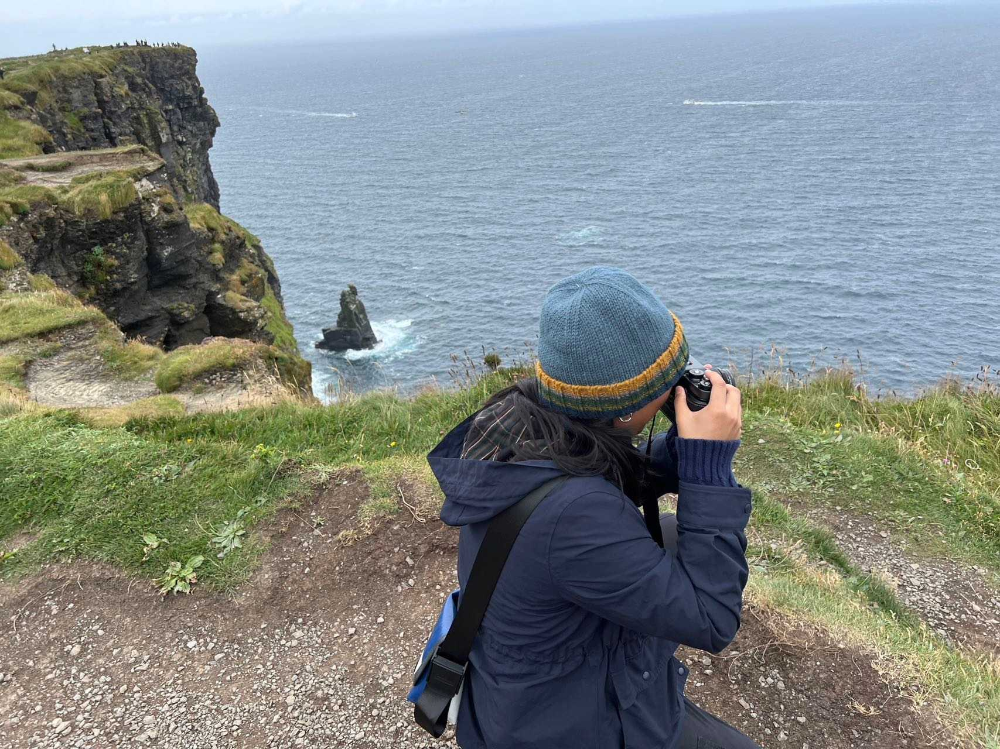

Hi!
My name is Christina Lin, and I am a sophomore at Northwestern University.

A photo of me taking photos with my favorite film camera in Ireland
I am double-majoring in history and journalism, and I just recently added an art theory and practice minor to my coursework!
Over the past two years, I have been working as a multimedia journalist for The Daily Northwestern (and have held several positions, including Best of Evanston Editor – view the webpage for that
here
, I didn’t code it, but it was my idea). I have also been interning at Northwestern Athletics, working as a photographer and videographer.
I am very passionate about photography and videography, and want to do something in the future related to this passion. Whether that is journalism, marketing or something else, I know that I will be happy as long as I have a camera in hand!